Obra destacada
Golden Calf · Jeffrey Shaw
Al mirar un pedestal físico a través de una pantalla portátil, aparece sobre él un becerro de oro virtual: una cita bíblica e irónica sobre la adoración tecnológica.
Ensayo visual · Arte y tecnología
Un recorrido desde el arte
01 · La escena aumentada
La realidad aumentada (RA) superpone elementos virtuales a un entorno físico y los integra en la escena que percibimos.
Para que la ilusión resulte convincente, los objetos digitales deben responder al punto de vista, la perspectiva, la iluminación y el encuadre del espacio real.
Obra destacada
Al mirar un pedestal físico a través de una pantalla portátil, aparece sobre él un becerro de oro virtual: una cita bíblica e irónica sobre la adoración tecnológica.
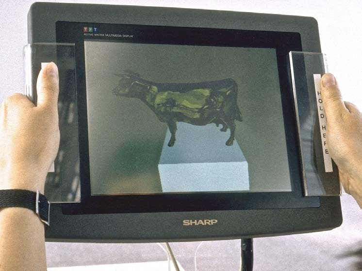
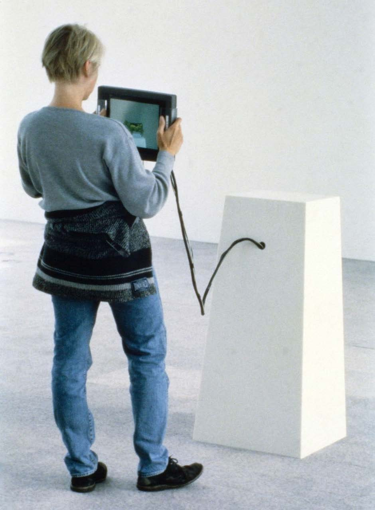
02 · Lo físico y lo virtual
La realidad virtual (RV) sustituye la percepción del entorno físico por un mundo sintético, mediante visores, auriculares o sistemas inmersivos.
Pero virtual no significa irreal. Desde la perspectiva de Pierre Lévy, lo virtual se opone a lo actual —lo presente—, no a lo real. Lo físico y lo virtual son dimensiones de la realidad; por eso, el eje más preciso es entorno físico ↔ entorno virtual.
Los dispositivos de realidad virtual, como los cascos HMD, aíslan la visión del espacio circundante.
Explorar HTC Vive ↗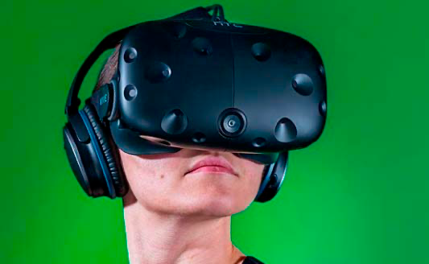
03 · Un gradiente de experiencias
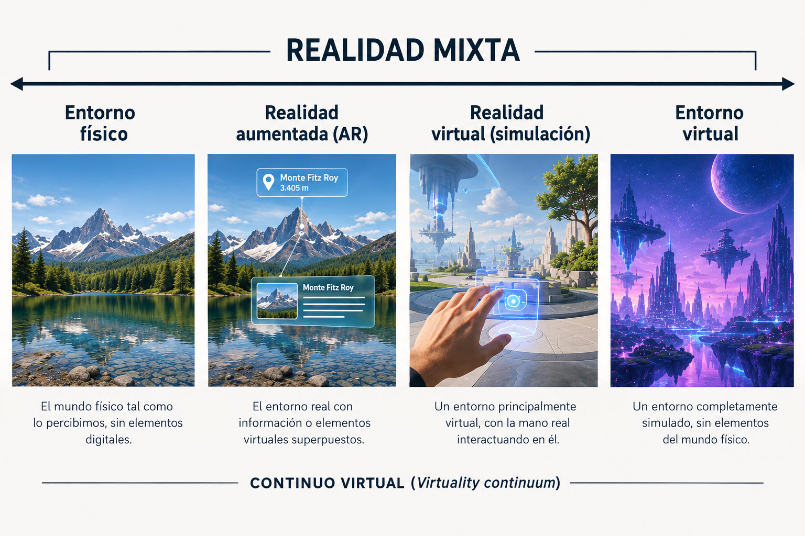
03 · Una obra en el continuo
Pablo Valbuena
La proyección de luz sobre formas arquitectónicas transforma la percepción del espacio físico y hace visible el cruce entre materia y entorno digital.
La obra sitúa al espectador en el continuo de las realidades mixtas: la escultura permanece presente, mientras la luz la prolonga y altera.
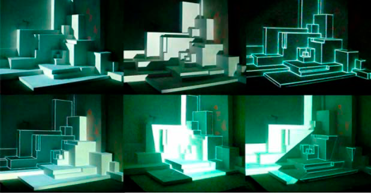
04 · Dispositivos de RA
Los visores see-through superponen información digital al campo visual. Algunos reconocen patrones del entorno para ubicar los objetos virtuales con precisión.
En The Artvertiser, lentes modificados sustituyen anuncios urbanos por obras de arte. En Hidden Worlds of Noise and Voice, la voz de los espectadores se convierte en geometrías visibles.
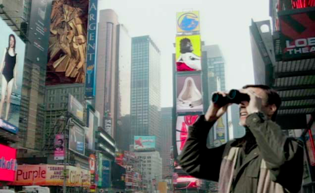
Julian Oliver
La publicidad de la vía pública se convierte en soporte para el arte.
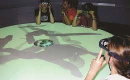
09Golan Levin & Zachary Lieberman
La voz se transforma en formas espaciales que pueden verse y explorarse.
05 · Dispositivos de RA
Los teléfonos y las tabletas reúnen cámara, pantalla, sensores y capacidad de procesamiento en un solo dispositivo.
Al apuntarlos al entorno, funcionan como una ventana portátil que revela una capa virtual. Su popularización hizo más accesibles las experiencias de realidad aumentada.
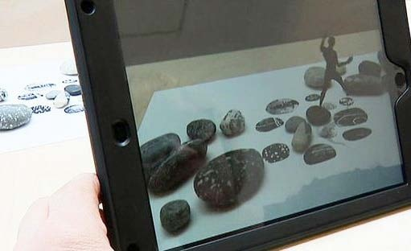
Adrien M & Claire B
Animaciones poéticas aparecen sobre piedras y dibujos físicos.
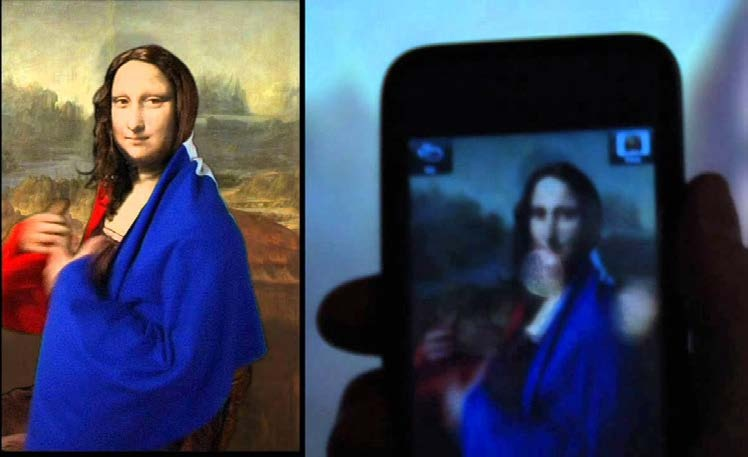
Amir Baradaran
La Gioconda cobra vida y se envuelve en la bandera francesa.
06 · Dispositivos de RA
La proyección sobre volúmenes físicos alinea luz e imagen con la geometría de los objetos para transformarlos ante todo el público.
A diferencia de los visores y las pantallas, no exige un dispositivo individual: la ilusión es colectiva y ocupa el espacio.
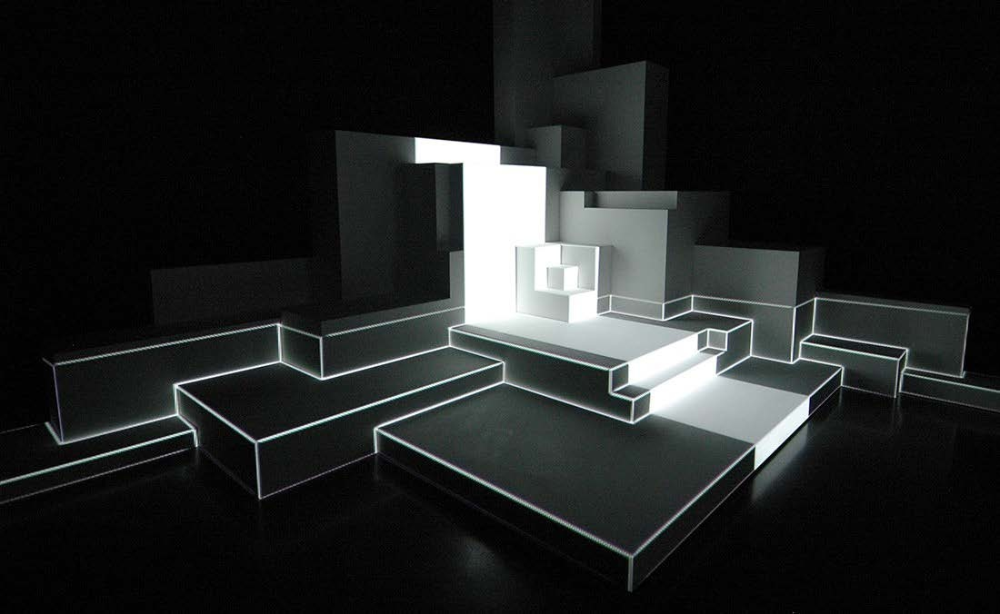
Pablo Valbuena
Líneas de luz alteran la percepción de estructuras geométricas.
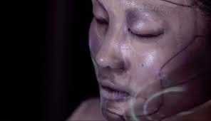
Nobumichi Asai y equipo
Tracking en tiempo real convierte el rostro en una superficie cambiante.
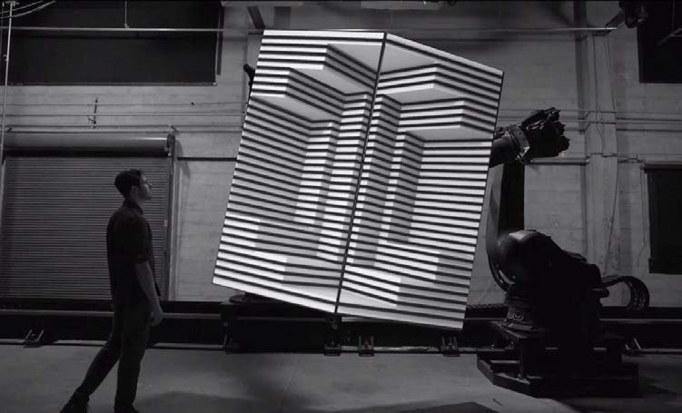
07 · Dispositivos de RA
En la RA geolocalizada, los elementos digitales se anclan a coordenadas y lugares específicos, en vez de reconocerse mediante patrones visuales.
Estas intervenciones site-specific abren preguntas sobre quién puede representar, ocupar o transformar —incluso virtualmente— el espacio público y privado.
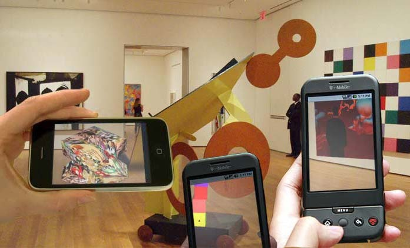
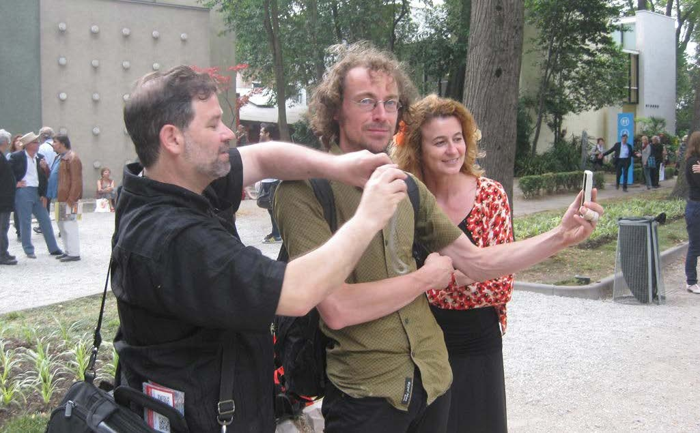
Sander Veenhof · Manifest.AR
Obras no autorizadas en el Oval Office, el MoMA y la Bienal de Venecia.
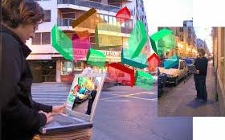
Clara Boj & Diego Díaz
Los flujos de información de las redes Wi-Fi urbanas se hacen visibles en 3D.
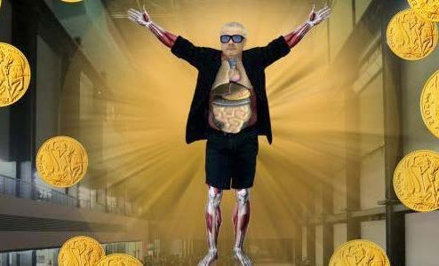
Tamiko Thiel
Una lluvia de monedas virtuales ironiza sobre el mercado del arte.
08 · El continuo, invertido
En la virtualidad aumentada, el entorno virtual es el marco principal y son los elementos físicos los que ingresan en él.
Manos, objetos e interfaces tangibles pueden modificar, manipular o habitar ese espacio sintético.
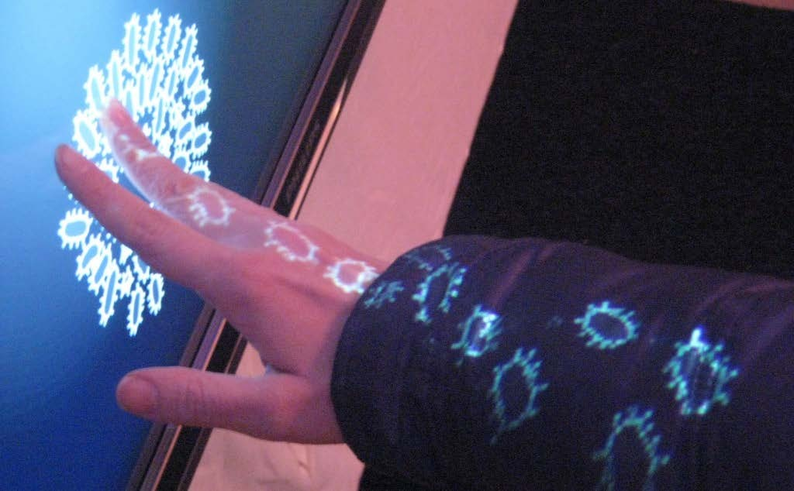
Chris Sugrue
Organismos digitales parecen escapar de la pantalla y recorrer la mano.
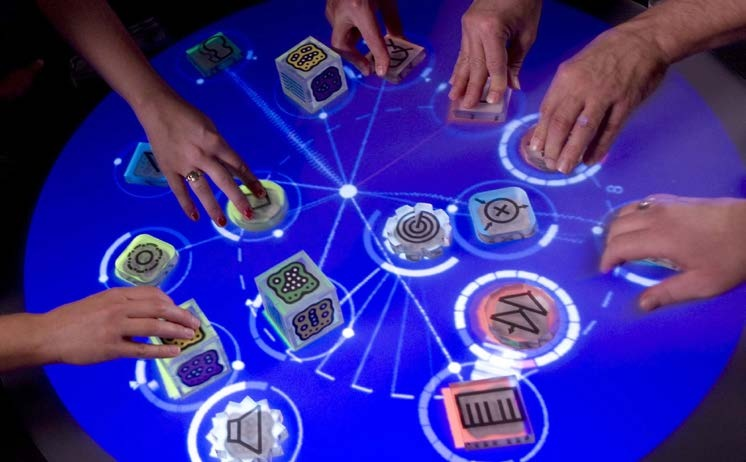
Sergi Jordà y equipo
Objetos físicos sobre una mesa controlan módulos virtuales de síntesis sonora.
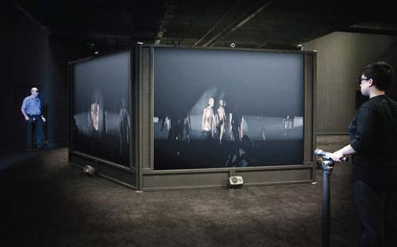
Sarah Kenderdine & Jeffrey Shaw
Los espectadores recorren un mundo de seres sintéticos con linternas físicas.
10 · Cierre
Las realidades mixtas llevan la cultura digital más allá de la pantalla: la hacen habitar e intervenir el entorno cotidiano.
Para el arte, este cruce abre un campo para explorar la territorialidad, la soberanía del espacio y el ilusionismo tecno-poético. Lo virtual ya no está lejos: comparte nuestro mundo.
A partir de Introducción a la Realidad Aumentada y las Realidades Mixtas
Emiliano Causa · Laboratorio emmeLab, UNLP